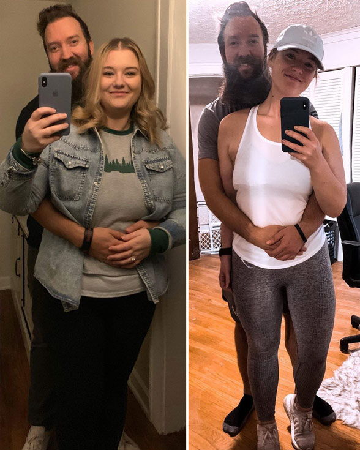
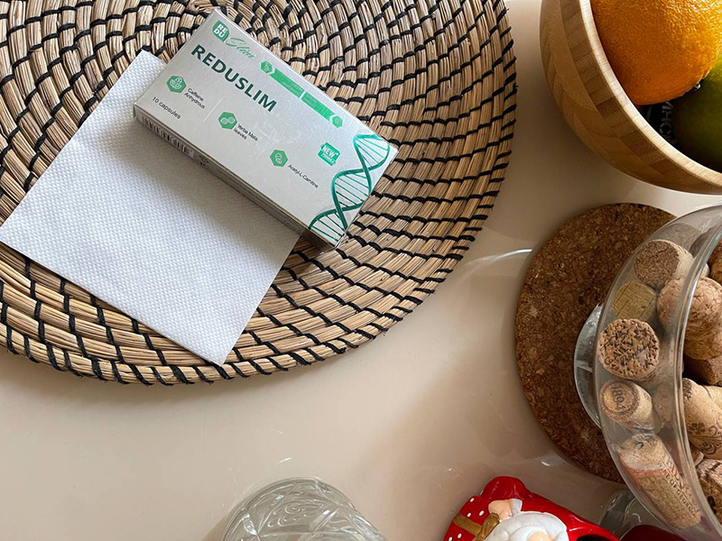
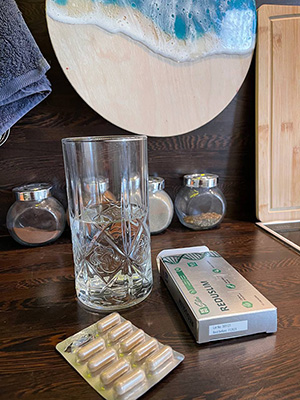
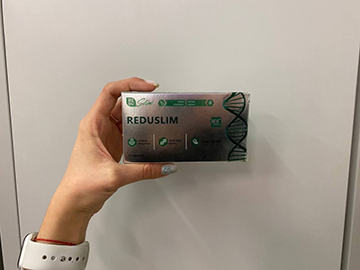
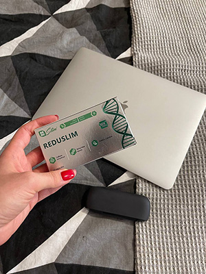

17 komentářů
Můj příběh Jak mi mateřství pomohlo zhubnout a stát se spokojenou a sebejistou ženou


Když jsem ve 24 letech porodila, moje tělo se z toho vzpamatovalo samo. Nebyl pro mě problém získat zpět váhu, kterou jsem měla před otěhotněním. Stehna se mi zpevnily a byla jsem opět ve formě. To samé se stalo i po mém druhém těhotenství o dva roky později. Když jsem ale ve 32 letech otěhotněla potřetí, žádný zázrak se už nekonal.
Nezodpovědně jsem jedla jako normálně a doufala jsem, že se moje váha opět upraví, stejně jako v případě předchozích těhotenství. To se ale nestalo. Když mému nejmladšímu dítěti bylo 6 měsíců, stále jsem přibírala (lidé si dokonce mysleli, že čekám čtvrté dítě). Moje dítě bylo neklidné, neměla jsem vůbec čas na sebe a musela jsem ho neustále chovat. Děti mě udržovaly zaneprázdněnou a můj manžel byl ve stresu kvůli práci. Kvůli tomu jsem jedla samé sladké věci, slané a smažené pokrmy a takhle stále dokola. Byla jsem jako prase. I při nejmenším pohybu jsem se potila a srdce mi bušilo.

Když jsem už vážila 105 kg, všimla jsem si, že se můj manžel dívá po jiných ženách. Nemohla jsem mu to mít za zlé, co jsem čekala, když i já sama jsem nesnesla pohled do zrcadla. Vyhýbala jsem se všem zrcadlům a rozhodně jsem nebyla ochotná se před ním svléknout... Schovávala jsem se v dětském pokoji a spala se svým nejmladším dítětem v posteli plné sladkostí.
To jediné, co mě motivovalo konečně vyhledat odbornou pomoc, bylo to, že moje dítě ve 14 měsících skoro nemohlo chodit… to je noční můra každé matky. Nemohla jsem se ani předklonit, abych mu pomáhala. Záda mi praskaly a cítila jsem se ztuhlá. Kdykoli jsem se pohnula, kapal ze mě pot.
Už jsem takhle dál žít nemohla, tak jsem poprosila manžela, aby si vzal volno v práci a postaral se o děti, zatímco já půjdu k dietologovi. Moje první zkušenost s dietologem nestojí za řeč, nasadili mi proteinovou dietu, kterou jsem zvládla držet jen 3 dny. Byla jsem tak vyčerpaná a hladová, že mi neustále ujižděly nervy.

Šla jsem k jinému dietologovi, který mi nasadil keto dietu. Hlavní myšlenkou keto diety je to, že jíte pouze bílkoviny a tuky a vynecháte všechny sacharidy, takže tělo začne spalovat uložené tukové zásoby. To pro mě nebylo těžké, protože jsem mohla jíst jídla, která mám ráda. Všechno šlo dobře až do 5. dne, kdy mě zastavilo něco, čemu dietolog říká "keto chřipka". Mezi příznaky patří únava, nevolnost, mozková mlha a bolesti hlavy, které neustoupí ani po nejsilnějších lécích. Se třemi dětmi jsem to prostě nedokázala vydržet.
Můj dietolog mi doporučil produkt pro zrychlení nástupu ketózy a usnadnění mojí diety. Je to tobolky, které jsem se zamilovala. Jedna kapsle ráno mi dal energie stejně jako moje ranní káva.
Nemohu říct, že jsem okamžitě zhubla o 28 kg, ale začala jsem se cítit mnohem lépe už po několika dnech. Jakmile jsem začala vezměte si , všimla jsem si změny v chuti k jídlu. Po dlouhé době jsem se ani nedotkla sušenek. Večer jsem přestala chodit do lednice a nepřejídala jsem se. Dobře se mi spalo a budila jsem se se spoustou energie.
Břicho se mi každý den zmenšovalo. Musela jsem si utahovat opasek, místo toho, abych ho povolovala jako dříve. Uběhly 2 týdny a mně už byly velké kalhoty. Kdykoli jsem šla kolem zrcadla, byla jsem spokojená a měla jsem dobrou náladu. Můj manžel se mnou flirtoval a já už jsem se mu nevyhýbala.
O měsíc později jsem zhubla uz 14 kg. Nic jsem pro to nemusela dělat, opravdu. Jen jsem vzal a jedla jsem jako dříve. Někdy jsem dokonce jedla sladkosti a nezdravé jídlo, takže se nedá říci, že bych držela keto dietu. Moje porce se ale hodně zmenšily. Cítila jsem se lehká a svobodná a vypadala jsem dokonce lépe, než když jsem porodila svoje první dítě. Ani jsem nemusela mít hlad. Domácí práce a péče o děti byly najednou také jednodušší. Bylo to jako kdybych začala nový život.

Začala jsem se více hýbat a naučila jsem svého syna chodit. Jsem šťastná. Ostatní matky na hřišti už se na mě nedívají skrz prsty.
Celý proces hubnutí mi trval jen 2 měsíce. Dietolog řekl, že takhle funguje. Pro dosažení stejných výsledků bez tohoto zařízení bych musela čekat 4-5 měsíců. Lituji jen toho, že jsem ho našla tak pozdě a dlouho jsem trpěla nadváhou.

Vážím nyní 77 kg, což je na moji výšku 175 cm naprosto v pořádku. Při pohledu do zrcadla opět vidím přitažlivou mladou ženu. Cítím se žádaná a moje oči září štěstím. Moje manželství je plné porozumění, lásky a vášně.

Pokud trpíte nadváhou, nevzdávejte to! Za žádnou cenu! Pokud to s hubnutím myslíte vážně, zkuste . Pomohl mně a pomůže i vám.

Komentáře:
julie222
Myslela jsem si, že jste svůj blog smazala. Mám velkou radost! Vaše příběhy mi vhání slzy do očí
1111KatkaNová
Jste skvělá! Vypadáte lépe než kdy dříve!
kristen1234
Každou zimu přiberu alespoň 5 kg, letos to bylo 10. Musím rychle zhubnout, jinak se v létě budu muset schovávat v oblečení na pláži.
olivia_19s
Slyšela jsem o ! Všichni říkají, že je úžasný!
99scarlett99
Ahoj všichni. Co myslíte, není lepší zajít si na liposukci a mít to za sebou? Minulý rok jsem to udělala a nemůžu si stěžovat. Nebylo to levné, ale rozhodně to stálo za to.
emilie_166
Je těžké uvěřit, že můžete zhubnout za měsíc bez vážných diet a intenzivního cvičení, ale zkusím to.
momof4
Regulovat váhu je s postupem věku těžké. Neměla jsem štěstí když jsem se omezovala v jídle. Nemůžu odolat sladkostem! Proto jsem se rozhodla zkusit . Stačí 2 kapsle denně a máte hotovo. Pokaždé mi zmírní chuť k jídlu. Už teď vidím výsledky, moje váha klesá. 20 kg za měsíc a půl. Můžu to dokázat těmito fotkami.
hazel.nutpie
Dnes mi dorazil balíček a už nyní můžu potvrdit, že to opravdu okamžitě snižuje chuť k jídlu! Nechtěla jsem jíst nic kromě oběda a večeře včera i dnes. V noci se mi lépe spalo, což je velmi důležité, protože ostatní doplňky stravy mi způsobovaly nespavost.
OlivaOliva
Jsem moc líná na to, abych cvičila a mám moc ráda sladké na to, abych držela dietu. Upřímně jsem si myslela, že mi bude trvat velmi dlouho, než se zbavím tuku na břiše. Dokonce jsem začala kupovat větší oblečení… ale podařilo se mi to utajit. mi pomohl zbavit se tuku na stehnech. Mám o 14 kg méně! A jen za 1 měsíc! Mohu to jedině doporučit! Zkuste to!
Penelope
Dříve jsem velmi snadno přibírala. Stačilo pár sladkostí nebo dortíků a hned druhý den jsem měla větší boky. Potom jsem vždycky týden hladověla, abych se dostala zase do formy. Takhle to bylo dříve, teď už nemusím vůbec řešit, co jím. Přijímám a udržuji si 56 kg, aniž bych musela nad jídlem přemýšlet.
FlowerOfLove:99scarlett99
Liposukce je komplikovaná a nebezpečná operace. Navíc je nespolehlivá. Jedna z mých kamarádek na ni šla před 3 lety a musí chodit pořád dokola. Čím více tuku takhle odsajete, tím více ho zase naberete.
Lily
Šla jsem na tu webovou stránku a přečetla jsem si seznam ingrediencí. Všechny byly přírodní, to mě přesvědčilo. Jiné produkty na hubnutí, které nejsou přírodní, mohou být nebezpečné. Zkusila jsem jedny tablety na hubnutí, ze kterých mě bolelo břicho. Doufám, že nebude mít žádné vedlejší účinky.
Lenka
Jedna z mých kolegyň začal užívat . V poslední době hodně zhubla. Všichni v kanceláři jsou z toho ohromení. Přemýšlím, že do toho také půjdu.
HanaMoon_999
Funguje to. Našla jsem to asi před půl rokem. Teď už nemám žádné problémy s váhou. Dříve jsem vážila 79 kg! Vzala jsem si rady ostatních k srdci a nelituji toho. Každý, koho už nebaví mít nadváhu, nebo jen chce zhubnout pár kilo, by to měl zkusit, protože opravdu není nic lepšího. Cítím se po tom zdravá, nedělá to nic špatného s hormony, střevy ani žaludkem, jako ostatní suplementy. Nemůžu si stěžovat.
AriaKleingirlygirl
Děkuji za doporučení, zkusila jsem už všechno ostatní a neměla jsem úspěch. Doufám, že to opravdu funguje.
Eliška Horáková
Nemůžu to najít nikde v lékiárně. V našem městě to asi nemají.
Jana
Samozřejmě že ne. Píšou, že se to prodává pouze na oficiálních webových stránkách. I když najdete něco podobného v lékárně, bude to nějaký padělek. Objednal jsem si tyto kapsle a zahájil kurz. Zhubla jsem 3 kg za první týden. Jsem nadšená!